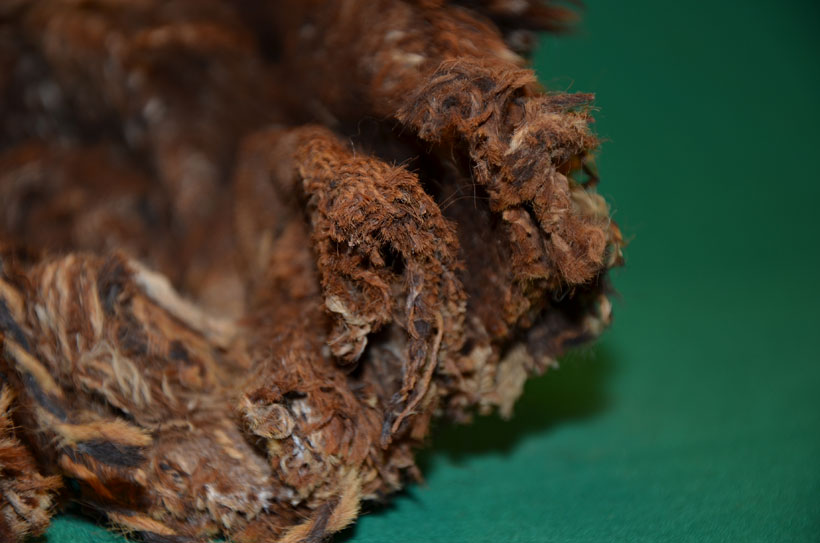
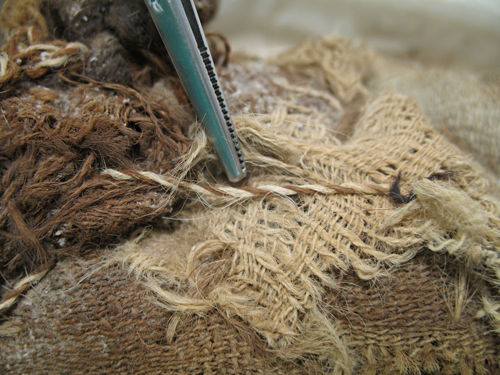
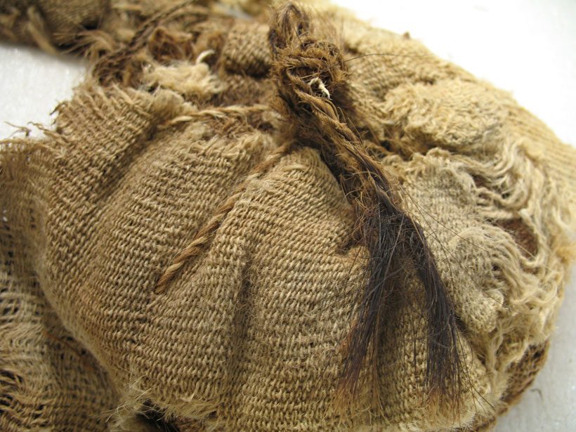
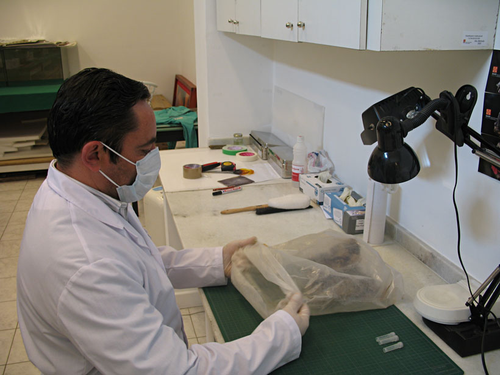
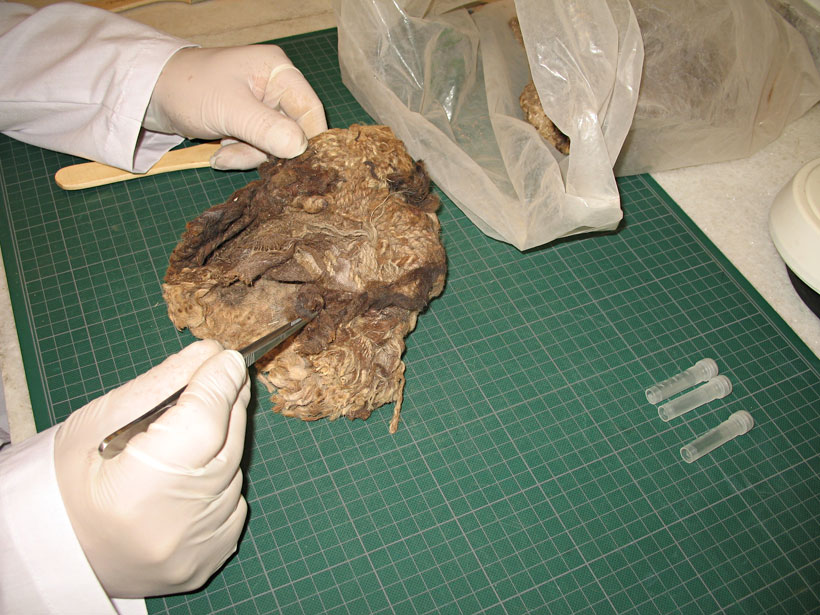
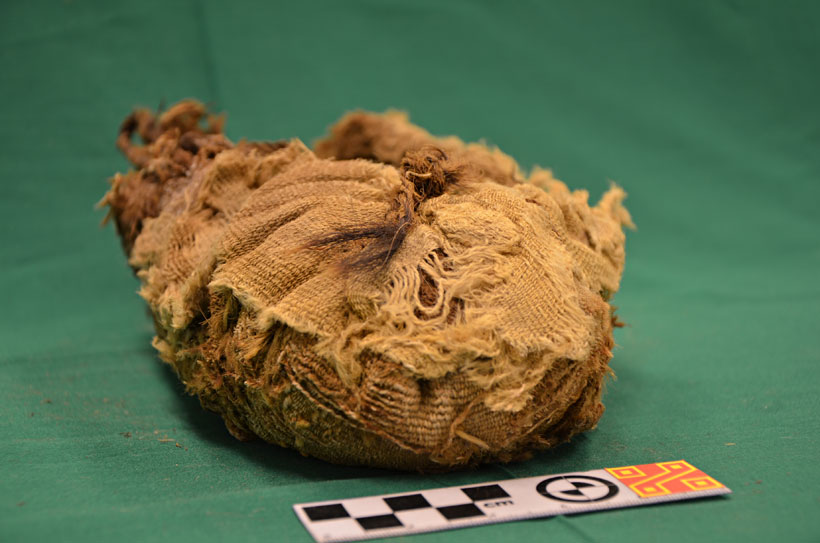
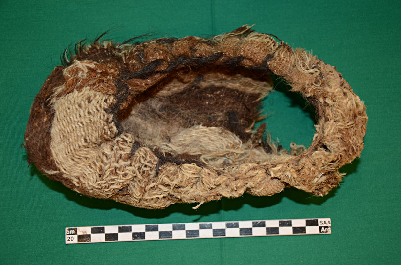
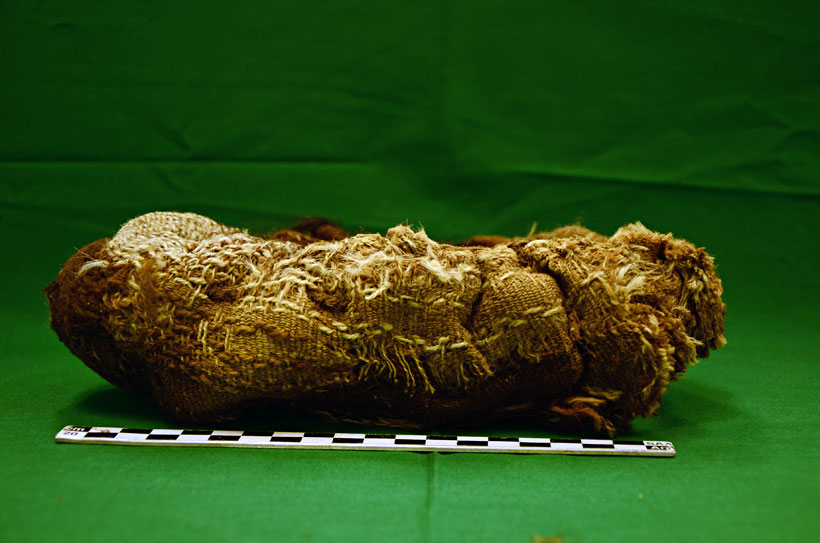
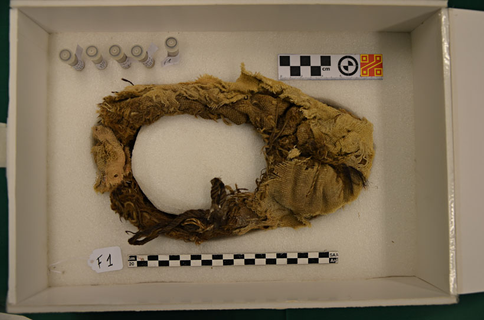

En este original trabajo de investigación arqueológica, Christian Vitry nos devela los diferentes tipos de calzado que utilizaban la sociedad inca hace cinco siglos atrás
Por Christian Vitry, Montañista y Antropólogo
Restauración Fotográfica: Centro Cultural Argentino de Montaña, Natalia Fernández Juárez
Hay algunos elementos de la cotidianeidad que acompañaron a los seres humanos desde tiempos inmemorables. Justamente, por ser tan comunes, a veces se pierde de vista la importancia que tuvieron y tendrán. Conoceremos los diferentes tipos de calzado que utilizaban los incas hace cinco siglos, para ello tendremos en cuenta no solo los documentos históricos, sino también la evidencia directa que nos ofrecen los restos arqueológicos.

Sandalias llanke del Llullaillaco, Salta. Foto: Gentileza - Museo de Arqueología de Alta Montaña, MAAM
Las fuentes históricas
Las fuentes históricas son de gran ayuda para interpretar la evidencia arqueológica, gracias a ellas y todo lo escrito acerca del Tawantinsuyu (estado inca), hoy podemos tener un panorama general de lo que fue la vida en el tiempo de los incas.
Entre los numerosos cronistas del siglo XVI y XVII, destacamos a Felipe Guamán Poma de Ayala, quien relata detalles de la historia inca antes y después de la conquista, con abundantes dibujos, donde podemos apreciar los diferentes calzados usados en la época.

Niño del Llullaillaco, Salta
Foto: Gentileza de Lisardo Maggipinto – Museo de Arqueología de Alta Montaña
El Alguacil Mayor
Dentro de la estructura administrativa de los incas se encontraban los alguaciles menores (chacnay camayoc) y los alguaciles mayores (uatay camayoc). Estos cargos no eran para el común de la gente, sino, exclusivo de los hijos de las concubinas del inca o sus sobrinos y los hijos de los principales personajes de la nobleza incaica.
El Alguacil Mayor se encargaba de impartir justicia y hacer respetar las leyes incas, teniendo la facultad de castigar o apresar a quienes no las cumplían.
Además de la vestimenta que lo identificaba como noble, durante las misiones de control, el Alguacil Mayor llevaba como insignia la chuspa (bolsa) y un par de llanke (sandalias) del Inca.
El emperador era considerado hijo del sol, la principal deidad, por tal motivo él era una deidad y los calzados y la chuspa eran elementos que había utilizado y por ende estaban embebidos de sacralidad y poder.

Alguacil Mayor portando las sandalias y bolsa del emperador como insignia de poder.
Grabado de Felipe Guamán Poma de Ayala, 1615
Pauau Pallac
Las Pauau pallac eran niñas de 9 a 12 años de edad y se dedicaban a recoger distintos tipos de flores y plantas que servían para las ofrendas al sol y a las capacochas (ofrendas humanas como las del Llullaillaco, Aconcagua, Chañi, Chuscha, Ampato, Misti, Plomo y otras montañas). Los elementos recolectados eran llevados a los depósitos (collcas) de la nobleza inca, donde las Acllas o vírgenes del sol luego las procesaban. Con estas y otras materias primas se fabricaban ropas y calzados para la nobleza inca y las ofrendas a realizarse en las altas montañas u otras huacas (lugares sagrados).

Pauau pallac, niñas que recolectaban flores y materia prima para la elaboración
de calzados para la nobleza entre otras cosas.
Grabado de Felipe Guamán Poma de Ayala, 1615
Vírgenes del Sol
Las Acllas o vírgenes del sol, eran mujeres de gran belleza y perfección física, escogidas para la elaboración de finos tejidos, calzados, bebidas y otros elementos que servían para las ofrendas al inca y a las huacas.
Vivían en reclusión en unos edificios llamados accllahuasi (casas de las acllas). De estos lugares debieron salir los finos textiles (cumbi) de los niños ofrendados en las altas montañas como el Llullaillaco (Argentina-Chile), Plomo (Chile), Ampato (Perú) entre otras.
Existían diferentes tipos de acllas de acuerdo a las funciones que cumplían y para quien. Las Aclla pampa eran las vírgenes comunes, se distribuían en todo el Tawantinsuyu, estaban las Acllap Chacran (sementera de las escogidas) que trabajaban en los campos de cultivo para los tambos reales y para servir en las fiestas, también hubo acllas dedicadas a la música y al canto. En algunos casos reclutaban niñas de cuatro años Uinachicoc Aclla (escogida que hacen crecer) a quienes les enseñaban a tejer, hilar y todas las labores que fuesen necesarias.

Vírgenes del Sol hilando para el Inca y las ofrendas principales.
Grabado de Felipe Guamán Poma de Ayala, 1615
Los calzados incas
En el mundo andino, con una gran diversidad de ambientes geográficos y grupos étnicos, hubo diferentes tipos de calzados. Se pueden generalizar en dos variedades, uno abierto como sandalia, donde los dedos están descubiertos y otro cerrado, similar a un mocasín. Los más generalizados fueron los primeros y se conocen cuatro variedades.
La ojota (usuta o ushuta) es el término más conocido para denominar a las sandalias andinas y suele usarse como sinónimo. Las ushutas tienen una suela de cuero o fibra vegetal de donde salen tres amarres, dos para el talón y uno que pasa entre el dedo gordo y el siguiente. En estos amarres se sujetan los cordeles de lana, cintas de cuero o de fibra vegetal que fijan el pie a la suela.
Los calzados conocidos como Abarca o Shukuy, Chapito, y Llanke son variedades de un mismo tipo de calzado cuyas correas (de lana, fibra vegetal o cuero) cruzan el empeine en diagonal desde los dos amarres del costado de la parte anterior, hasta los dos posteriores que fijan luego el talón.
De los calzados cerrados tipo mocasín se pueden mencionar en términos generales el Pollco y el Kawkachu. Fabricados con cueros de camélido, venado o lobos marinos, los primeros de fina confección para las ceremonias y las ofrendas, los segundos muy resistentes a las inclemencias del clima y a las largas caminatas que realizaban los caravaneros con sus recuas de llamas a través de la cordillera.

Calzado inca, Pollqo del Llullaillaco. Foto: Lisardo Maggipinto MAAM

Sandalias incas, Llanke del Volcán Quewar. Foto: Lisardo Maggipinto - MAAM
Calzados de las ofrendas humanas en las montañas
Los hallazgos arqueológicos realizados en las altas cumbres de la cordillera de los Andes nos muestran de forma directa los calzados empleados por los incas. Antes de describirlos, vale la pena un comentario a tener en cuenta. Las montañas fueron un lugar sagrado de gran importancia para los incas y las culturas que los precedieron. Muchas culturas tienen la premisa de ingresar descalzos a los lugares sagrados, de hecho, las estatuillas humanas en miniatura halladas en contextos de ofrendas a las montañas están descalzas. Sin embargo, los niños ofrendados en las montañas calzan unos finos mocasines (pollqo) y uno se pregunta el por qué de esta situación. En respuesta se puede decir que estos niños, tras las ceremonias realizadas en el Cusco, la capital política y religiosa del Tawantinsuyu y en presencia del propio emperador inca, dejaban de ser mortales comunes y pasaban a ser deidades. Realizarían un viaje al lugar de los ancestros y muy cerca del sol, estarían en un lugar de gran valor religioso, por tal motivo conservaron sus calzados.
Describiremos a continuación los dos tipos de calzados que aparecen con mayor frecuencia en las ofrendas humanas realizadas en las montañas, el llanke y el pollqo.
Llanke
Este calzado fue utilizado en todo el continente americano en tiempos prehispánicos, confeccionados en una suela de fibra vegetal o de cuero. De la suela salen cuatro amarres, los dos de la parte posterior sirven para sostener el talón a través de unos cordeles de fibra vegetal o lana. En el empeine los cordeles se unen y en ellos se teje un cuadrángulo o rectángulo para luego bifurcarse y fijarse en los amarres laterales. Estos cordeles eran tejidos en el mismo lugar, evitando de esta forma los nudos y un mejor acomodamiento del pie al calzado.
El llanke fue el calzado más utilizado por los incas, se observa en los dibujos de los cronistas y está presente en las ofrendas humanas realizadas en el Llullaillaco, Quewar, Aconcagua y otras.
La siguiente cita de Bernabé Cobo nos da cuenta de la confusión respecto al nombre, pues utiliza el genérico “usuta” pero describe al llanke:
«Al calzado que usaban llamaban usuta; hácenlo de una suela más corta que lo largo del pie, de suerte que traen los dedos fuera dellos, para agarrar con ellos cuando suben cuesta arriba. No tienen más obra estos zapatos que las dichas suelas, atadas de los talones al empeine del pie con ciertos cordones de lana tan gruesos como el dedo, hechos con gran curiosidad, porque son redondos y blandos, por tener sacado el pelo como rizo o como pelo de alfombra, de colores muy vivos y hermosas labores, respecto de que toda la gala del calzado la ponen en estas ligaduras» (COBO B. 1962 [1653], t.II: 238).

Dos tipos de sandalias muy utilizadas por los incas, especialmente el Llanke. Dibujo Dra. Teresa Michieli

Sandalia tipo llanke que formaba parte del ajuar funerario de la momia del vocán Quewar (Salta, Argentina) de 6.180 m.
Foto: Gentileza de Lisardo Maggipinto – Museo de Arqueología de Alta Montaña
Pollqo
Los especialistas afirman que se trata del calzado típicamente inca. Se confeccionaba con la piel fresca del cuello de camélidos, ciervos y lobos marinos, cerrando la pieza a la altura del empeine donde se cosían los bordes dejando una abertura en el extremo anterior. Para darle la forma al calzado, utilizaban el cuero mojado sobre hormas que le daban una forma estandarizada. Debieron existir moldes y hormas para los diferentes tamaños de pollqo que se confeccionaban. Los bordes de la abertura se remataban con finos textiles con diseños geométricos.
Los niños del Llullaillaco están calzados con unos finos zapatos tipo pollqo, uno de los más refinados que se hicieron en el tiempo de los incas.

Calzado tipo pollqo que formaba parte del ajuar funerario de una de las momias del volcán Llullaillaco
(Salta, Argentina) de 6.739 m. Foto: Gentileza de Lisardo Maggipinto – Museo de Arqueología de Alta Montaña

La Doncella del Llullaillaco calza unos finos pollqo que posiblemente hayan sido confeccionados
por las Acllas en el Cusco.
Foto: Gentileza de Lisardo Maggipinto – Museo de Arqueología de Alta Montaña
Este breve y superficial recorrido por el mundo de los calzados incas nos sirve de base para poder referirnos a otra variedad de calzado hasta ahora desconocida, me refiero a los que se usaron los incas para subir a más de 6.000 metros de altura, sin duda un calzado especialmente preparado para resistir las inclemencias del tiempo en un ambiente tal hostil. Un hallazgo arqueológico sin precedentes en los Andes y que nos ayuda a entender mejor la dimensión humana de estos montañistas místicos del pasado, pero de eso hablaremos en una próxima nota.

Pollqo del Llullaillaco. Foto: Lisardo Maggipinto MAAM
Quienes tuvieron la fortuna de subir alguna montaña andina que haya sido un adoratorio de altura de los incas, seguramente se debieron hacer muchas preguntas relacionadas con los ¿por qué? de tales cultos en lugares tan inhóspitos y altos; también, como paso seguido, sobrevienen naturalmente las preguntas relacionadas con los ¿cómo? Y, en ese punto, cualquier montañista que haya estado por arriba de los 5.000 metros puede dimensionar con su propia experiencia la proeza de estos colegas del pasado.

Pollqo del Llullaillaco. Foto: Lisardo Maggipinto MAAM
Esa fue una pregunta que personalmente siempre me hice ¿cómo hicieron los incas para soportar las inclemencias del tiempo de las altas montañas? Nunca me convencieron las sandalias con algunas medias de lana como explicación, debía haber algo más, pero el registro arqueológico no nos aportaba nada, ni un indicio.
Uno sabe del acostumbramiento al frío y de la gran resistencia de los andinos, no obstante, hay un umbral donde las bajas temperaturas actúan más allá de los límites de tolerancia humana.
El tiempo transcurrió y sin buscar específicamente nada, simplemente apareció aquella respuesta a través de un fortuito hallazgo arqueológico, que me trajo a la memoria las palabras de mi padre, “el Llullaillaco, de a poco va entregando sus secretos”.

Calzado tipo pollqo. Foto: Gentileza de Lisardo Maggipinto – Museo de Arqueología de Alta Montaña
El hallazgo de los calzados
Nos encontrábamos siguiendo y estudiando los caminos ceremoniales, haciendo fichas del estado de conservación de cada uno de los sitios, registrando fotográficamente algunos detalles constructivos, revisando y corrigiendo planos, demarcando zonas de máxima protección y áreas de amortiguamiento, en fin, haciendo tareas que nada tenían que ver con la búsqueda de algo en particular, y la montaña nos hizo un hermoso regalo a quien escribe y mis compañeros Mario Lazarovich, Diego Sberna y Gonzalo Cristófani: Un bulto de textiles inidentificables en el hueco de una roca. Cuando recogimos el bulto de textiles, vimos que el mismo estaba separado en dos, así que determinamos ubicarlos en dos bolsas selladas. A través de las bolsas transparentes pude observar los rasgos generales de lo que podía ser un calzado; no recuerdo si manifesté mi tremenda alegría frente a mis compañeros, pero puedo asegurar que era enorme, en mis manos, estaba parte de una respuesta que había estado rondando mi cabeza durante muchos años, pero debo confesar que mi pregunta nunca fue de índole académico, sino más bien humana.
Tras regresar de aquella expedición de fines del 2011 seguí de cerca el trabajo de laboratorio realizado por Pedro Santillán que, luego de una semana, ya estaban los textiles separados y se trataba de cinco calzados en diferentes estados de conservación, pero todos con los talones totalmente gastados. Ninguno de los cinco formaban par y pude distinguir dos modelos de confección diferenciados y una variante sutil en uno de esos tipos, por lo que se puede decir que identificamos tres variedades de calzados de alta montaña.
Confirmada la presunción de que se trataba de calzados, empecé a investigar sobre el tema. Me puse en contacto con colegas de diferentes países andinos como Chile, Bolivia y Perú, también con algunos museos para rastrear si en sus colecciones había algo parecido, con investigadores dedicados a la textilería y con todo aquel que pudiera aportar algún tipo de información; pero mi búsqueda no arrojó ningún resultado positivo, a excepción del colega y amigo Dr. Johan Reinhard, quien me dijo haber visto un calzado similar en Arequipa, en el año 1995, procedente del nevado de Ampato, pero no había ninguna publicación sobre el mismo. Reinhard me envió una fotografía y pude comprobar que se trataba del mismo tipo de calzado hallado en el Llullaillaco.

Lugar del hallazgo en Llullaillaco. Foto: Christian Vitry

Mario Lazarovich, Diego Sberna y Gonzalo Cristófani en Llullaillaco. Foto: Christian Vitry
Un nombre para un nuevo calzado
Estaba frente a un hallazgo nuevo, o al menos poco y nada conocido. Tenía que asignarle un nombre ya que no estaba en la clasificación de calzados conocidos para el ámbito andino, y aquí comenzó primero mi búsqueda en los diccionarios y vocabularios históricos del runa simi (quechua), y después, mi consulta con quechua hablantes o estudiosos del idioma.
Pese a los variados aportes de colegas mi idea era poder asignarle un nombre literal de acuerdo a su función, algo que identifique los dos elementos que lo componen, es decir calzado y montaña.
Ya sabía que montaña en quechua se traducía como “orco” y la duda era si ponerle el nombre de los mocasines, es decir “pollco”, de los cuales tenía evidencia gráfica y material en el Museo de Arqueología de Alta Montaña, o pensar quizás en el “kawkachu”, que se trata de un calzado rústico, pero también cerrado como el pollco.
Finalmente, tras varias conversaciones con la Licenciada Katia Gibaja, quechua hablante y compañera de trabajo en el Museo de Arqueología de Alta Montaña, surgió el nombre “orco kawkachun” que se traduce como “calzado de montaña”. De esta manera surge la propuesta de este neologismo, las investigaciones futuras, los especialistas en idioma quechua y fundamentalmente el tiempo, dirán si es correcto o no, pero ese es otro tema, por lo pronto, a los efectos de este trabajo de descubrimiento de algo nuevo utilizaré ese nombre.

Hallazgo de los calzados incas en Llullaillaco. Foto: Gentileza de Lisardo Maggipinto – Museo de Arqueología de Alta Montaña

Hallazgo de los calzados incas en Llullaillaco. Foto: Gentileza de Lisardo Maggipinto – Museo de Arqueología de Alta Montaña
Orco Kawkachun
El orco kawkachun es de una confección simple, me atrevo a decir que fueron confeccionados en la propia base de la montaña antes del ascenso. Las materias primas empleadas consisten en uno o dos géneros de tela e hilos para coser con grandes puntadas.
Esta variedad de calzado está confeccionado con una o dos telas de lana común (abasca) de forma rectangular, posiblemente proveniente de algún poncho en desuso. El rectángulo textil se pliega en si mismo varias veces hasta formar un rectángulo alargado de varias capas. Luego se unían los dos extremos dando la forma del pie y se cosían los pliegues en la parte de la suela y luego la parte superior hasta lograr la forma final.
El Orco kawkachun es un calzado que tiene entre cuatro y ocho capas de lana y seguramente se utilizó directamente con el pie descalzo. Pese a lo fácil de la confección y lo rústico de las telas empleadas, poseen algunos detalles cargados de contenidos simbólicos, propicios para transitar por lugares sagrados.
Este calzado fue el utilizado especialmente para la alta montaña y no estaba identificado hasta ahora. Se trata de un hallazgo arqueológico de gran importancia para el mundo andino prehispánico y la humanidad, ya que nos permite saber de que manera ascendían estos montañistas místicos a centenares de cumbres en la cordillera de los Andes.

Hallazgo de los calzados incas en Llullaillaco. Foto: Gentileza de Lisardo Maggipinto – Museo de Arqueología de Alta Montaña

Hallazgo de los calzados incas en Llullaillaco. Foto: Gentileza de Lisardo Maggipinto – Museo de Arqueología de Alta Montaña

Hallazgo de los calzados incas en Llullaillaco. Foto: Gentileza de Lisardo Maggipinto – Museo de Arqueología de Alta Montaña
El mundo simbólico de las calzados
Todos los calzados que describimos provienen de lugares sagrados, de gran significación religiosa. Aunque parezcan comunes, estuvieron preparados especialmente por los artesanos para transitar por un lugar especial, quizás uno de los más especiales del Tawantinsuyu. Cabe recordar que el volcán Llullaillaco es el lugar más alto donde los incas (y la humanidad) realizaron ofrendas humanas. Las huacas debían ser alimentadas permanentemente, por tal motivo, desde el Cusco debieron salir las peregrinaciones con las ofrendas para el apu y esos niños que, una vez ofrendados, adquirieron la categoría de deidades.
En la concepción andina, la montaña es el lugar de los ancestros, es el lugar de donde nace la vida y adonde regresa, es un lugar sagrado.
Como todo lugar sagrado mereció el respeto y también la preparación de las personas que lo transitarían y eso se puede observar en muchos elementos arqueológicos como veremos a continuación.
Los calzados para la alta montaña (Orco Kawkachun) poseen elementos de importancia relacionados con el mundo mágico - religioso. Por una parte, algunas costuras se realizaron con hilo overo o lloke y por otra, algunos hilos están confeccionados con cabello humano. La investigadora López Campeny analiza la participación de tres elementos textiles en aspectos vinculados con el ritual mortuorio “concretamente a través del análisis de tres atributos materiales: el hilado de torsión zurda o llok’e, los nudos rituales y el empleo de cabello humano” (López Campeny, 2009:459). De estos tres elementos, podemos hacer referencia a dos, el cabello humano y el hilado de torsión zurda.

Hallazgo de los calzados incas en Llullaillaco. Foto: Gentileza de Lisardo Maggipinto – Museo de Arqueología de Alta Montaña

Hallazgo de los calzados incas en Llullaillaco. Foto: Gentileza de Lisardo Maggipinto – Museo de Arqueología de Alta Montaña
Cabello humano como textil
El cabello trenzado y usado como hilo para coser fue bastante utilizado en el mundo andino, no solamente por el largo de las fibras, sino principalmente por sus características relacionadas con la resistencia mecánica y adaptabilidad a los cambios de las condiciones ambientales (temperatura y humedad), sin embargo, pese a lo expresado, tiene una gran importancia simbólica y fue utilizado en algunos contextos funerarios o rituales. La investigadora Denise Arnold comenta al respecto que “...el poder asociado al cabello se plasma en la creencia de que éste atesora los pensamientos de una persona, conservando gran parte del conocimiento, incluso después de haber sido cortado o de haber muerto su portador. Por eso, cuando la mujer teje, aprovecha este conocimiento al hacer “re-hablar” a la persona que ha muerto. En la práctica, con cada pasada de trama es como si se estuviera haciendo “re-hablar” al muerto (Arnold et al. 2007: 66, en López Campeny, 2009:474).
El orco kawkachun posee puntadas hechas con hilos de cabello humano. Pero no es el único, ya que una de las sandalias (llanke) del volcán Quewar tiene la capellada hecha en parte con cabello, también el par de sandalias que tenía puesto el niño del Aconcagua tiene una capellada de cabello humano y una suela de fibra vegetal.
El Orqo kawkachun no fue solamente un calzado preparado para resistir las bajas temperaturas de la montaña, sino también, estuvo confeccionado con ciertos elementos que le otorgaron ciertos poderes protectores para las personas que lo utilizaron. Hoy, podemos decir que además de todo lo visto hasta ahora, es también el portador de un mensaje que hoy intentamos comprender.

Hallazgo de los calzados incas en Llullaillaco. Foto: Gentileza de Lisardo Maggipinto – Museo de Arqueología de Alta Montaña

Hallazgo de los calzados incas en Llullaillaco. Foto: Gentileza de Lisardo Maggipinto – Museo de Arqueología de Alta Montaña
Lloke, un hilo con poderes
El lloke es un hilo con torsión hacia la izquierda, al revés de lo que es común, en sentido anti horario. Algunas comunidades andinas tienen la creencia que este tipo de hilado es para los muertos, dicen que es porque el muerto ya no tiene fuerza o energía vital. Lo derecho e izquierdo también suele estar asociado a los puntos cardinales, que tienen una gran significación social y que determina la distribución espacial cotidiana. El Este se vincula con la vida, la luz, el nacimiento, la fuerza vital. En Kaata, una comunidad ubicada en Bolivia “la casa-almacén, al lado oriental del patio, es el almacén de recipientes de maíz seco, papas, oca y ropa. Está asociado con la abundancia de descendencia y comida, los frutos de la actividad diaria y las tierras bajas” (Bastien, 1996:177). Muchas danzas rituales, de movimiento circular, siguen este sentido horario, hacia el Este.
La dirección anti horaria o hacia el Oeste es el opuesto complementario y entra en el terreno de lo oscuro y fúnebre.
Rolandi y Jiménez (1983-1985: 285) interpretan que “El hilado normal es un hecho cultural que transforma la materia prima dada por la naturaleza. El hilado al revés es el opuesto al producto humano y parece tener la propiedad de volver al seno de la tierra, a la naturaleza misma. Su fuerza reside justamente en eso” (citado en López Campeny, 2009:464).
Por lo general, el hilado lloke se suele confeccionar con hilos de colores contrastantes, denominado hilado overo o moliné. En la actualidad se lo emplea como elemento de protección contra los malos espíritus en la fiesta de la Pachamama, momento en le cual se les coloca a los participantes hilo lloke en las muñecas y a veces en los tobillos.
El calzado de alta montaña incaico (orco kawkachun) posee puntadas realizadas con hilo lloke. A simple vista se puede observar que dicha costura no tiene gran importancia en la confección del calzado, por lo que ahora sabemos cual pudo haber sido el significado de ese hilo overo. Asimismo, hay otros cordeles no overos, pero con torsión zurda.
“Este cordel sintetizaría los dos atributos relevados actualmente para el hilado llok’e, es decir, la dirección de torsión final izquierda (Z) y el hilado moliné de colores contrastantes. Además, el hecho de que se trate de un elemento superestructural -es decir, agregado a la pieza con posterioridad a la conformación de su estructura textil- permite sostener con mayor sustento la interpretación de su relación con una práctica vinculada al ritual funerario.” (citado en López Campeny, 2009:467). En el caso del orco kawkachun, si bien no está asociado directamente a un enterratorio, perteneció a personas que transitaron por lugares cargados de significación, donde hubieron ofrendas humanas y ceremonias de gran importancia que trascendían la dimensión humana, tal vez esas personas fueron “sacerdotes” o quizás sus ayudantes.

Hallazgo de los calzados incas en Llullaillaco. Foto: Gentileza de Lisardo Maggipinto – Museo de Arqueología de Alta Montaña

Hallazgo de los calzados incas en Llullaillaco. Foto: Gentileza de Lisardo Maggipinto – Museo de Arqueología de Alta Montaña
Montañistas de ayer y de hoy
La historia del montañismo deportivo surge en los Alpes, en el año 1786, cuando la cima del Mont Blanc (4.807 m) fue ascendida por el naturalista suizo Horacio Benedicto de Saussure. A partir de ese momento, de manera continuada y creciente, el deporte se fue consolidando, perfeccionando y conquistando personas apasionadas que salieron a explorar las cordilleras del planeta y saborear los placeres de la altura y el mundo vertical.
En el año 1855 los hermanos Adolf y Robert Schlagintweit, alpinistas y exploradores alemanes ascendieron el pico Kamet de 6.800 metros en el Tíbet, altura que marcó un hito en el montañismo de altura y debió pasar mucho tiempo hasta que se superase dicha cota.
Sin embargo, una altura similar a la del Kamet, junto a decenas de montañas superiores a 6.000 metros y centenares de picos de más de 5.000 metros ya habían sido ascendidos unos cuatrocientos años antes en el lejano y exótico continente americano; desde Mesoamérica, con los Mexicas o Aztecas que le rendían culto principalmente a Tlaloc, el dios del agua, hasta la cordillera de los Andes, donde los Incas le rendían culto a Inti el dios sol, las montañas habían sido ascendidas.
Se puede cuestionar que estos ascensos prehispánicos no hacen a la historia del montañismo. Con o sin razón, se puede decir también que la finalidad de los ascensos no era el placer o el ego, sino el culto. No obstante, hasta el momento, se conocen doscientas montañas con evidencias arqueológicas en los Andes, con ascensos que no fueron casuales, sino, muy bien planificados y frecuentados cíclicamente para depositar ofrendas en las cimas más importantes; con “campamentos” en bases y laderas, caminos de acceso a las montañas y caminos ceremoniales hasta las cimas. Como si esto no fuese suficiente, el hallazgo arqueológico de un tipo de calzado que no se halló en ningún otro contexto nunca, el Orco Kawkachun, diseñado con varias capas de telas de lana para una función específica, subir la montaña. A lo que se debe sumar un tipo de “gorra” especial que se hallaba en la ofrenda humana del cerro El Toro en San Juan. El resto del equipo de montaña ya lo podemos imaginar, las camisetas andinas o unkus que llegaban hasta las rodillas y ponchos de distintos grosores para regular la temperatura con la misma técnica que hoy se emplea, a través de capas.
El hallazgo arqueológico de estos calzados de montaña de la época de los incas nos abre un nuevo panorama en la historia de la humanidad en general y del montañismo en particular.

Hallazgo de los calzados incas en Llullaillaco. Foto: Gentileza de Lisardo Maggipinto – Museo de Arqueología de Alta Montaña

Hallazgo de los calzados incas en Llullaillaco. Foto: Gentileza de Lisardo Maggipinto – Museo de Arqueología de Alta Montaña
Área Restauración Fotográfica del CCAM: Natalia Fernández Juárez
Notas Relacionadas:
-


Descubrimiento Arqueológico en las laderas del Volcán Llullaillaco -

Exploradores suecos, pioneros
de la arqueología de alta
montaña en la Puna -

Los controversiales niños sacrificados del Volcán Llullaillaco, Provincia de Salta -

Sobre Nieves y Tumbas, el Santuario Incaico. Expedición al Nevado Los Tambillos de 1971 -

Apachetas y Mojones Andinos. Algo más que una acumulación de rocas -

Las momias de Chinchorro son las más antiguas del planeta
Es nuestra misión dar a conocer la Cultura de Montaña Argentina y por lo tanto es prioritario que si es utilizado nuestro material visual, acuerden con la institución su uso. Si están interesados en el material fotográfico del CCAM, le sugerimos que se contacten a: info@culturademontania.org.ar
Todo el material fotográfico del CCAM es restaurado y publicado en alta resolución.